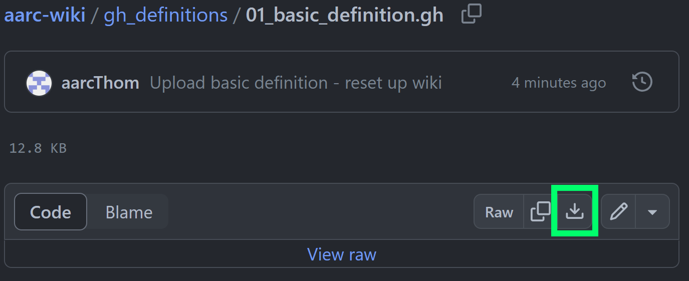
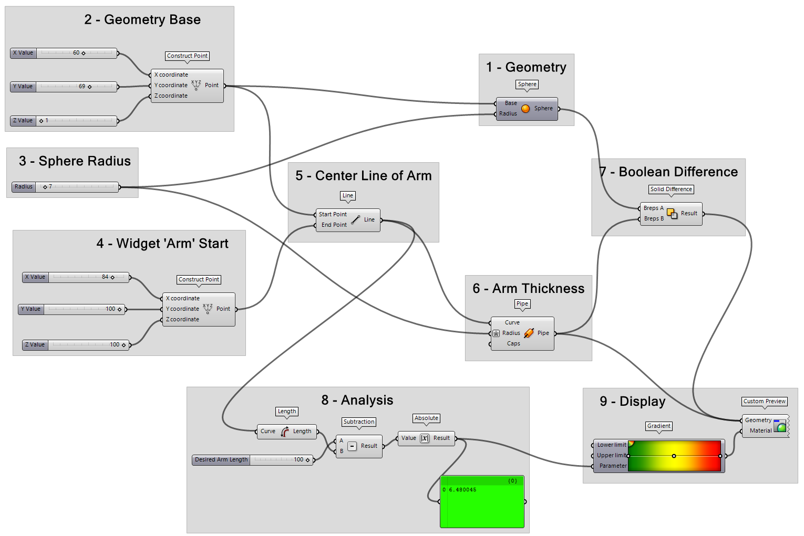
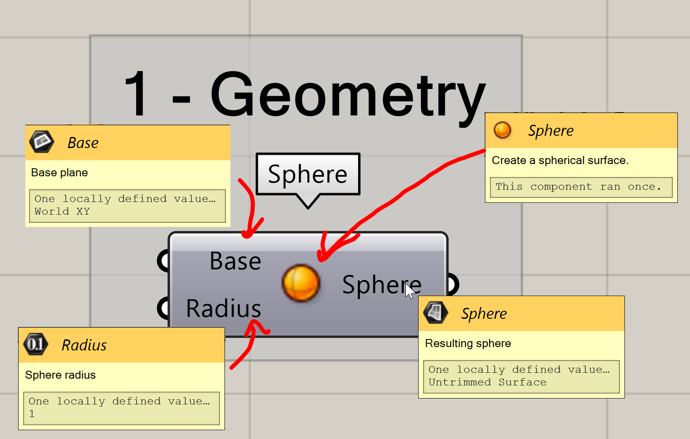
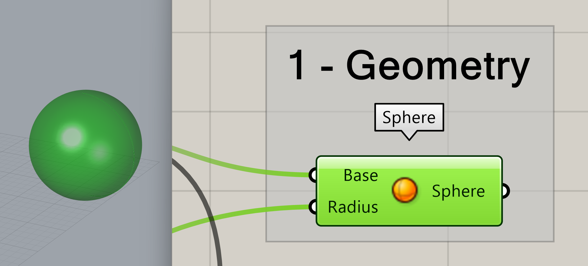
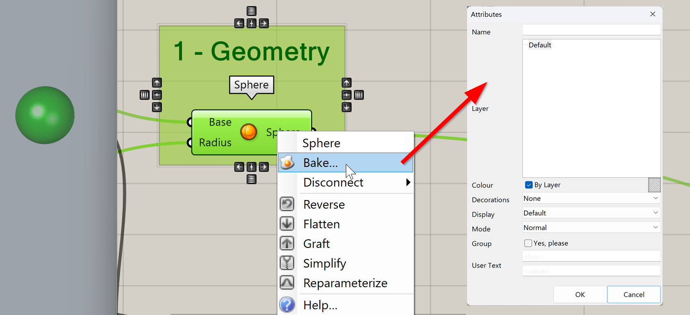
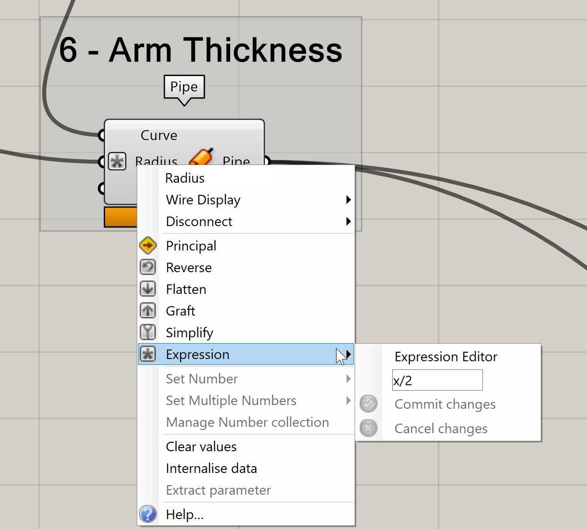
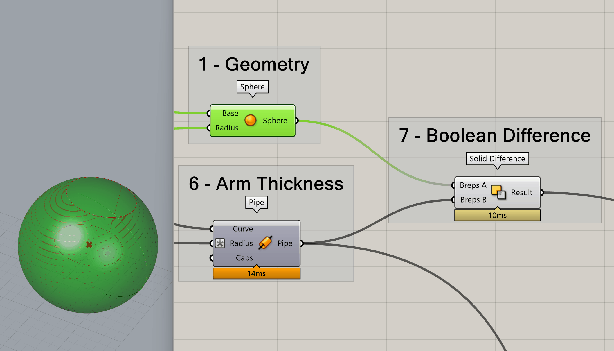

Your First Grasshopper Definition
File Downloads
All GH files will be available for download. Follow the links provided with each page of instruction to download the proper file. Once you're on the linked page, click the raw download button as shown in a green rectangle below to download the .gh file.

Your First Grasshopper Definition
For the first real definition we cover, we are going to make a widget. This widget isn't totally purposeless - it demonstrates some of the core functionalities within Grasshopper.
We will cover this and future definitions, step by step. Refer to the numbered component groups in the image below.

01 - Geometry
We will start with geometry we can create within Grasshopper itself. To create a sphere using only Grasshopper, we can use Sphere. The key take away from examining this component with its default settings is that Grasshopper offers multiple methods of visualizing data contained within a component.

Hover over everything
In the input and output boxes shown above, we are shown three important pieces of data. Going from top to bottom: 1. The name of the input or output. 2. A description of what sort of data can be passed through the input or output. 3. A description of the data currently flowing through an input or output.

Grasshopper geometry doesn't exit in Rhino until baked!
Despite being able to view the geometry in the Rhino viewports, Grasshopper geometry exists in its own world until it is specifically brought into Rhino through baking.
Baking
Baking refers to converting Grasshopper geometry to Rhino geometry.
To bring geometry from Grasshopper into Rhino at any step of your definition, right click the component you want to bake and select 🍳Bake.
This will bring up the generically titled Attributes window. Here, you can select which layer you want to bake your selected Grasshopper geometry to. You can also choose to group the geometry or set some display options.

02 / 03 - Setting Parameters
In this section of our definition, we are using 3 Number Slider parameters to define the X, Y, and Z values of a 3D point. To convert these values into the geometric point, we use Construct Point.
We also use a Number Slider to define the radius of the Sphere.
Parameters & Components - What are they?
All the little 'nodes' that make up a Grasshopper definition (script) are called components. Parameters are a class of component that either reference data from Rhino, reference data from outside of Rhino / Grasshopper, or, as in this case, reference user input.
The output of Construct Point is plugged into the the base input of the Sphere component.
Grasshopper Type Conversions
Grasshopper often converts geometrical types that are close enough upon input. In this example, Construct Point outputs a 3D point which is plugged into Base in Sphere despite Base asking for a 3D plane. In cases like these Grasshopper will automatically convert a 3D point into a plane with an origin defined by that 3D point. Other conversions happen - try plugging the 'wrong' geometry into inputs to see what happens, but don't be surprised if you get an error sometimes!
04 / 05 - Drawing a Line and Visualizing Geometry
In addition to textual descriptions, we can of course, visualize geometry in the Rhino window. Be default, geometry that is visible but not selected will be displayed as red while geometry that is selected will be displayed a green.
In this case when we click the Construct Point in group 4, we see the corresponding point turn green in the Rhino viewport.
Group 5 shows the use of the Line component. This component defines a line from a start point and an end point - extremely useful.
06 - The Input Expression Editor
Grasshopper offers a really useful way to quickly alter numerical values on component input. Let's say we want to ensure that our widget arm is always half a wide as the widget base. To do so, we can right click the Radius of Pipe, select Expression and then write a short algebraic statement in the input box. In this case we can write x / 2. This will set our radius to always be half of the input value, and since our input Number Slider also controls the Sphere's radius, the radius of our pipe will always be the sphere radius / 2.
Always X!
The input Expression field can only ever contain one variable, X. If you need a more complex expression, you can always build it up outside of an input from components found in the Maths tab.

07 Previewing Geometry
Grasshopper is non-destructive. Geometry created during the process of building up a definition is never deleted. However, you will often want to hide intermediate geometry. To do so, right click the component containing the geometry to be hidden, and click Preview. This will toggle on and off the geometry preview in the Rhino viewport without affecting the downstream Grasshopper components.

Enable is different than Preview
Enable disables both the preview in the Rhino viewport, and disables the component preventing downstream components from accessing the contained data. Try disabling the output of a component. You will see that you get errors downstream!